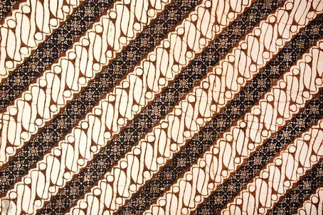

Sejarah Batik
Batik telah berkembang dalam kehidupan masyarakat Indonesia sejak masa lampau. Tradisi membuat kain dengan pola dan teknik pewarnaan tertentu berkembang di berbagai daerah, terutama di Pulau Jawa. Pada awal perkembangannya, batik banyak digunakan dalam lingkungan kerajaan dan beberapa motif memiliki aturan tertentu mengenai penggunaannya. Seiring berjalannya waktu, batik semakin dikenal oleh masyarakat luas dan berkembang menjadi bagian dari kehidupan sehari-hari.
Perkembangan batik membuat setiap daerah menghasilkan karakter yang berbeda. Batik dari Yogyakarta dan Solo dikenal dengan berbagai motif tradisional yang memiliki filosofi mendalam. Sementara itu, daerah pesisir seperti Pekalongan dan Cirebon menghasilkan batik dengan warna serta motif yang lebih beragam karena mendapat pengaruh dari perdagangan dan budaya luar. Keberagaman tersebut menunjukkan bahwa budaya Indonesia dapat berkembang tanpa kehilangan identitasnya.
Motif Batik Indonesia
Indonesia memiliki banyak sekali motif batik yang berasal dari berbagai daerah. Setiap motif memiliki bentuk, warna, dan filosofi yang berbeda. Beberapa motif yang terkenal antara lain Batik Parang, Batik Kawung, Batik Mega Mendung, Sekar Jagad, dan Truntum. Keberagaman motif tersebut menjadi bukti bahwa Indonesia memiliki kekayaan budaya yang sangat luas.
